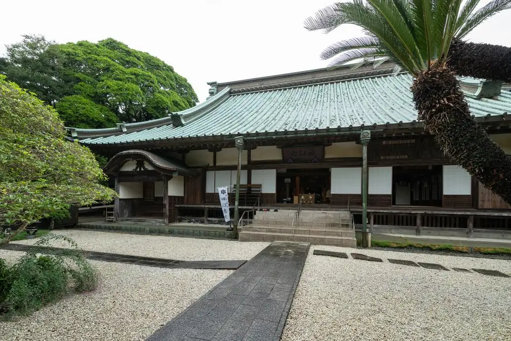
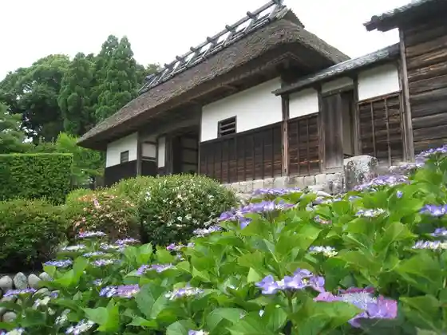
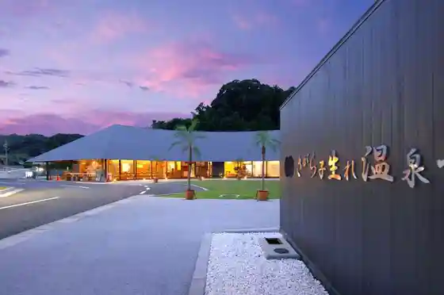

Japan / Shizuoka / Makinohara
Makinohara
Makinohara · Shizuoka
Makinohara
Highlighted on the Shizuoka map.

Sights
Fujisan Shizuoka Airport
Makinohara, Shizuoka · 0548-29-2000 · Official / source link
Ogane Ie
Makinohara, Shizuoka · Official / source link

Kyuko Yama Hirata Tera
Makinohara, Shizuoka · 0548-52-0492 · Official / source link
Sagara Ko Umare Onsen Hall
Makinohara, Shizuoka · 054-854-1126 · Official / source link

Sei Nami Coast
Makinohara, Shizuoka · 0548-53-2623 · Official / source link
Sagara San Beach
Makinohara, Shizuoka · 0548-53-2623 · Official / source link
Yuden no Sato Park Yuden Museum
Makinohara, Shizuoka · 0548-87-2525 · Official / source link
Ko Umare Ishi
Makinohara, Shizuoka · 0548-53-2623 · Official / source link
Makinohara Shiryo Kan
Makinohara, Shizuoka · 0548-53-2625 · Official / source link
Roadside Station Soratto Makinohara
Makinohara, Shizuoka · 0548-23-5110 · Official / source link
Sei Nami Beach
Makinohara, Shizuoka · 0548-53-2623 · Official / source link
Gurinpia Makinohara
Makinohara, Shizuoka · 0548-27-2995 · Official / source link